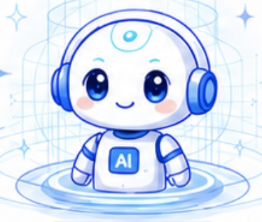

反复纠正，反复遗忘
你讲过的风格、边界和偏好，会在新会话里重新归零。

专治 Claude Code、Codex 的"反复教不会"：Distill Yourself 把你被遗忘的判断、决策，蒸馏成可复用资产
Problem
你讲过的风格、边界和偏好，会在新会话里重新归零。
架构取舍、排错路径、产品判断都散落在对话历史中。
AI 无法继承你的长期决策方式，只能一次次重新学习。
Overview
从会话浏览、工具使用、行为信号，到个人风格和可复用判断，Distill Yourself 把散落的 AI 对话变成可追溯、可分析、可回写的工作记忆。
从总览页进入会话、洞察、Evolve 和 Distill Yourself，让所有历史入口集中在一个工作台里。
跨 Claude Code 和 Codex 汇总会话、项目和上下文，让被遗忘的历史重新变成可检索资产。
认知特质会被压缩成简洁的 Runtime Pack，方便同步到 AI 配置里，让下一次会话继承你的判断方式。
把用户提问、AI 回复、工具调用和会话摘要分层呈现，让长对话也能快速回看。
从工具调用、文件热点和错误模式中看清 AI 协作里的真实工作流。
从会话索引、搜索、洞察，到认知模型和 Runtime Pack，看一次完整的经验蒸馏流程。
从历史对话里提炼你的沟通偏好、决策方式和工作边界。
Profile Radar 把历史对话里反复出现的能力维度和协作偏好可视化，让“AI 眼里的你”不再只是一段模糊描述。
反复出现的纠正会被整理成优先级明确的规则，附带频率和证据，让未来的 AI 协作少踩同一类坑。
Cognitive Layer
Distill Yourself 不只是保存对话，而是把其中反复出现的判断方式提炼成下一次协作可消费的上下文。

Community
加入社区，交流 Distill Yourself 的使用经验、反馈和共创想法。
扫码加入社区，交流 Distill Yourself 的使用经验、反馈和共创想法。